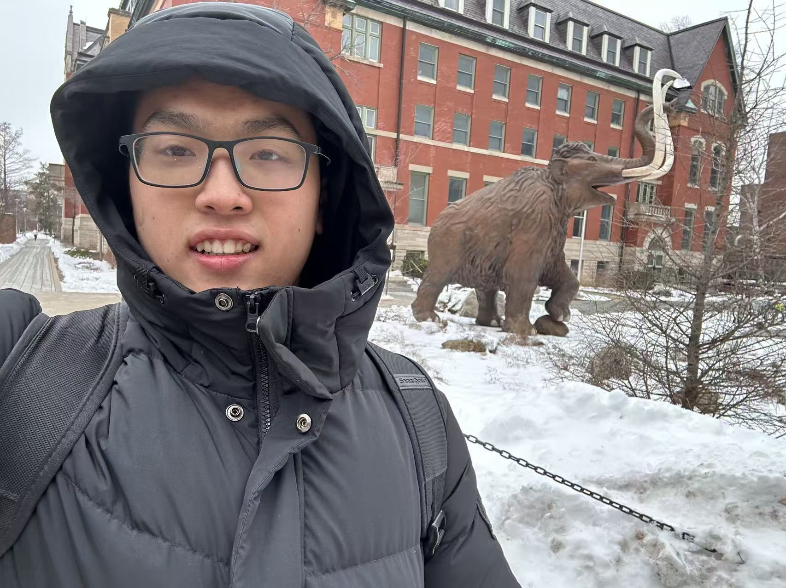
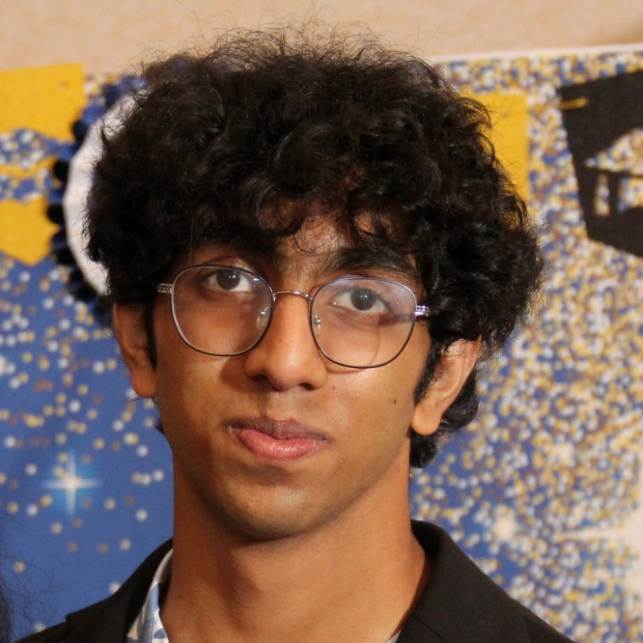

UIUC Qiskit Fall Fest
To be or not to be — until measured
A week-long beginner-friendly quantum computing event running October 19–25 at UIUC, run by SIGQuantum and sponsored by IBM. We cover hands-on Qiskit workshops, quantum hardware, and IBM keynote talk for an industry perspective — plus a weekend mini-hackathon.
01 / THE EXPERIENCE
Week schedule
Earn points for every event you attend by filling out our attendance forms. 4 points earns you an official IBM certificate for participating, and 10 points earns you a winner IBM certificate!
Quantum Nanophotonic Devices Talk
A talk on quantum nanophotonic devices by ECE Professor Simeon Bogdanov.
Qiskit Introductory Workshop
An introductory workshop covering key features of the Qiskit language and basic applications.
Quantum Optics Talk
A quantum optics talk by Physics Professor Paul Kwiat.
Advanced Applications of Qiskit
Shor's algorithm, error mitigation, chemistry workflows and more. Dedicated work time for projects will be provided.
IBM Keynote Talk: Sanskriti Deva
IBM Product Marketing Manager Sanskriti Deva discusses the state of quantum in industry and how to prepare for the quantum world. Q&A session and free food to conclude the event.
Mini-Hackathon
Project teams work on creating a solid deliverable based on their topic. Judging takes place during the following week's meeting, and the top 2 teams receive a winner certificate and priority sponsored travel funding for IQuHack if desired.
*All schedule details are tentative and subject to change. Final updates will be announced in our Discord server.
02 / GUEST SPEAKERS
Speakers
ECE Faculty
Monday, Oct 19
Prof. Simeon Bogdanov
Leads the Quantum and Nanoscale Photonics Lab, studying single-photon emitters and spins coupled to nanophotonic structures for quantum information and sensing.
Talk: how quantum nanophotonic devices harness light–matter interaction at the nanoscale, and what it takes to build scalable, cryo-free photonic hardware for quantum networks.
Physics Faculty
Wednesday, Oct 21
Prof. Paul Kwiat
John Bardeen Chair in Physics and a pioneer of experimental quantum optics, working on entangled photons, single-photon sources, and quantum communication.
Talk: quantum optics fundamentals and how entangled photons enable precision measurement and quantum information science.
IBM Quantum
Friday, Oct 23
Sanskriti Deva
Quantum Product Marketing Manager at IBM Quantum, where she helps launch the software, hardware, and experiences bringing quantum into industry.
Keynote: the state of quantum in industry, how new hardware like IBM Quantum System Two is being put to work, and how to prepare for the quantum world — plus a live Q&A.
READY TO START?
Enter the quantum world.
Beginners are welcome. No previous quantum computing experience required.
03 / ORGANIZERS
Meet the team.

LEAD ORGANIZER
Yumu Zhao
yumuz2@illinois.edu

CO-ORGANIZER
Shrikar Dulam
sdulam2@illinois.edu